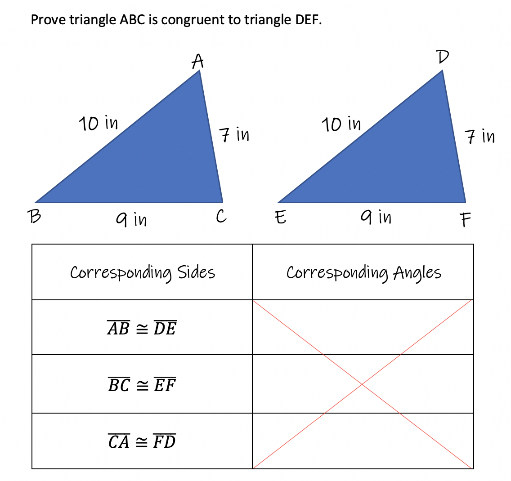

Proving Triangles are Congruent using Side-Side-Side (SSS)
In the real world of construction and design, triangles are everywhere around us. The necessity arises to be able to create one sized triangle, and then duplicate it many times. In construction, it is not important to build triangles using the degrees of the angles inside. What they discovered is they only needed the three side lengths to produce identical triangles.
But why? Why don't the degrees of the angles matter?
The answer to this question has been named "Side-Side-Side", or "SSS" for short. Let's begin by determining why the angle degrees are not relevant.
Example1: If you are given 3 measurements, the three side lengths to construct a triangle, there is one and only one size and shaped triangle that can be created. Therefore, all other triangles with the same three side lengths will be congruent to all the others.
In the image above, given three side lengths, they can be put together to form a triangle. Then the sides can be re-arranged to create multilpe triangles. But all the triangles in the picture are exactly the same size and same shape, therefore all the triangles are congruent to eachother.
Example 2:
Here is another example of using 3 segments to form a triangle. Notice again, while many duplicates can be made, and they may face a different direction, or be upside down or backwards, but all 5 triangles are still exactly the same size and shape, therefore they are congruent to eachother.
In summary, when using three side lengths, there is one and only one triangle that can be created. All other triangles are congruent to the original. This rule is called "Side-Side-Side" or "SSS" for short.
A word of caution: there is the possibility that the three side lengths cannot form a triangle. This happens when the two short sides combined together are shorter than the third side. Creating a situation where the two short sides can't reach eachother to form the top of the triangle. For example:
Triangle Inequality Theorem
The sum of the lengths of any two sides of a triangle must be greater than the length of the third side.
Example: Prove the triangles are congruent using Side-Side-Side:

In this example, all we need to do is match up the sides that are corresponding and make sure they are congruent(same length). Using the same table from the Congruent Triangles Module makes it easier to help keep track of the sides that match up. Notice we do not need to know the angle degrees, so the second column is left blank.
 Here is another example of using 3 segments to form a triangle. Notice again, while many duplicates can be made, and they may face a different direction, or be upside down or backwards, but all 5 triangles are still exactly the same size and shape, therefore they are congruent to eachother.
Here is another example of using 3 segments to form a triangle. Notice again, while many duplicates can be made, and they may face a different direction, or be upside down or backwards, but all 5 triangles are still exactly the same size and shape, therefore they are congruent to eachother.